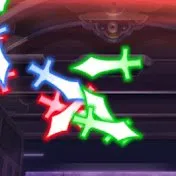

ホーム
ドキュメント
FAQ
更新履歴
サポートサーバー
招待
利用規約
プライバシーポリシー
Toggle dark mode

kakerucmd
— 2026/04/08 22:30 (last updated)
「お掃除上方修正しろbot」は2026年4月8日をもって一般公開を終了しました。
長らくのご利用、誠にありがとうございました。
詳細はサポートサーバーのお知らせチャンネルからご覧ください。